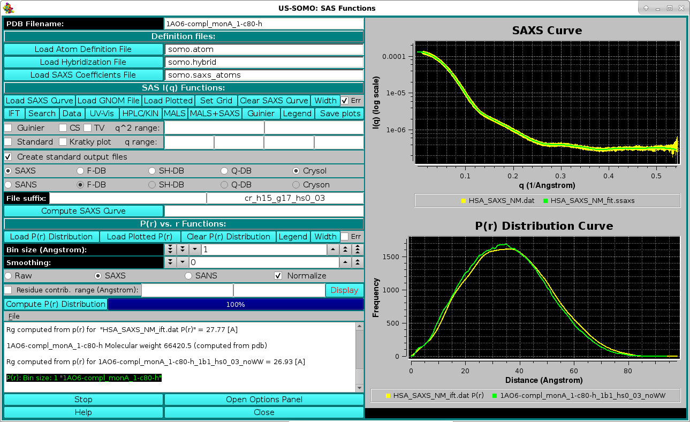
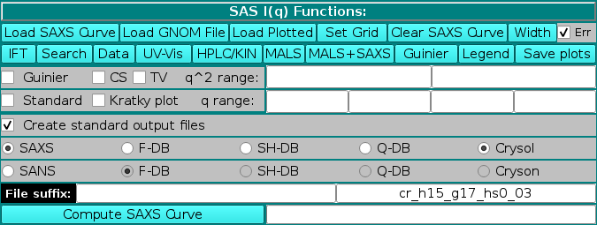
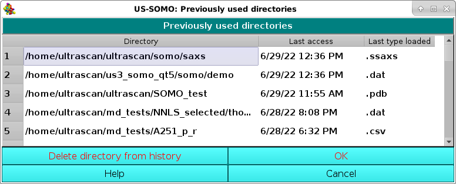
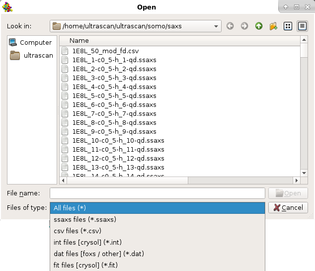
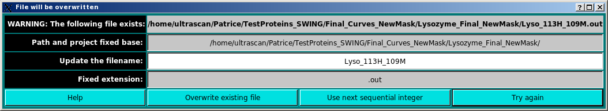
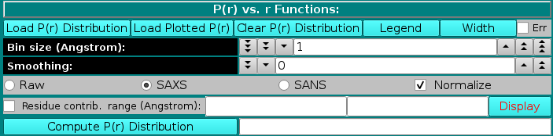

| |
Manual |

Small-Angle X-ray or Neutron Scattering (SAXS or SANS) I(q) vs. q curves, and pairwise distance distribution curves P(r) vs. r, can be generated by this module from either a PDB file or a bead model. Additionally, P(r) curves can be generated via the indirect Fourier transform from an experimental I(q) curve. In the above screenshot, an experimental Human Serum Albumin (HSA) SAXS curve (collected at the Synchrotron SOLEIL SWING beamline in 2012) is shown in the top right panel (yellow circles with error bars), overlaid with the back-calculated I(q) vs. q curve (green) after the IFT generation of the P(r) vs. r shown as the yellow curve in the bottom-right panel, overlaid with the P(r) vs. r calculated from the completed 1AO6.pdb monomer A structure (green curve).
A series of other features have been added over the years, and are accessible from this main panel as described below.
The module window is accessed from the US-SOMO main window by pressing the SAXS/SANS Functions button. If either a PDB or a bead model file are loaded in the US-SOMO main window, it will be automatically exported to the SAXS/SANS module, and listed in the PDB Filename (alternatively, Bead Model Filename) field. If no files were selected in the main US-SOMO window, this field will be empty.
In order to properly compute the I(q) vs. q and P(r) vs. r curves, the module utilizes the atom definition (default: somo.atom), hybridization (default: somo.hybrid) and SAXS coefficients (default: somo.saxs_atoms) tables. Different tables can be selected by pressing the Load Atom Definition File, Load Hybridization File, and Load SAXS Coefficients File buttons. See the main help for further explanations on the content and use of these tables.
The SAS module panel is divided in two sections, SAS I(q) Functions: and P(r) vs. r Functions:, which can operate indipendently, each one with its graphics window. Clicking on each windows' label will make all the fields below it disappear, and the graphic window will consequently expand. The panels can be restored by clicking again on their labels.

SAS I(q) Functions:
The first series of buttons in the "SAS I(q) Functions" section deals with operations on previously computed or experimental data.


Once a file has been selected (see above for a list of compatible file types), the curve will be displayed in the top-right interactive graphics window:

Portions of the graphs can be zoomed in by selecting them with the mouse while pressing the left button:

The top horizontal and right vertical scroll bars allow the visualization of other portions of the graph at the actual zoom level. Right-clicking with the mouse on the graph will restore the full scaling of the graph. Right-clicking on the graph frame will instead open an interactive panel for setting overall graph properties (not shown). Other plotting properties, such as the q units (Å or nm), can be set in the SAS Miscellaneous Options submenu. If a csv-style file is chosen, the datasets will be uploaded and listed in a special pop-up panel, where selection and other operations can be performed before plotting (see here).

The user will be then asked if she/he wants to save the entered molecular weight value in the GNOM file:

If the user accepts to save the molecular weight in the GNOM file, another pop-up window will appear asking to either overwrite the loaded GNOM file, or to change its filename:

By saving the molecular weight value in the GNOM file, US-SOMO will recognized it the next time the file is opened, without any further need to re-enter it.

and then to chose the finesse of the grid based on the number ov available q points:

For instance, setting a grid is quite useful when computing a SAXS/SANS I(q) vs. q curve from a structure to be compared with experimental data.


The fit residuals can be shown by selecting the Show residuals checkbox at the bottom of the graph. The residuals can be weighted by the SD associated with the data by selecting the Use standard deviations checkbox. In the example shown above, the outliers rejection routine (see here) was set at 2 SD, resulting in the rejection of the four data points marked with red crosses, better seen in the residuals plot. The residuals can also be shown in % mode by selecting the By percent checkbox. Irrespective of the visualization of the residuals graph, the SD associated with the data can be shown in the Guinier plot by selecting the SD error bars checkbox.
The results of the Guinier analysis are shown in the progress window:

By selecting the Kratky plot checkbox, it is also possible to plot the data as a Kratky plot (q2I(q) vs. q; Glatter and Kratky, Editors. Small-Angle X-ray Scattering. New York: Academic Press. 1982)); the q range can be modified in the corresponding fields. When comparing experimental and calculated data, a fit can be done in either standard or Kratky mode, with or without standard deviation (SD) weighting, by selecting the appropriate options in the Miscellaneous Options panel of the SAS Options menu (see here).

Clicking on Standard will revert the plot to the I(q) vs. q mode.
The method used for the computations of I(q) vs. q from atomic coordinates can be selected in the bar below the Create standard output files checkbox (if this checkbox is left unselected, no output files will be produced).
SAXS or SANS is the first option (default: SAXS; if SANS is selected, the name of the plot in the right-side upper panel will change accordingly). For SAXS, the choice is between:
A detailed description of some of the I(q) vs. q calculation methods reported above can be found in the SAXS/SANS Options submenu, where the parameters and options can be set.
When a method is selected, the right field of the File suffix: two fields will show an automatic extension: "db" for Full Debye, "sh" for Debye with spherical harmonics, "qd" for quick Debye,and cr_h##_g##_hs#_## for Crysol. For the latter, h## indicates the number of harmonics, g## the order of the Fibonacci grid, and hs#_## the contrast of the hydration shell. An user defined file suffix can also be added in the left field, and the content of these two fields will be appended to the PDB (or bead model) root filename. The I(q) vs. q curves generated with the F-DB, SH-DB, and Q-DB methods will have the extension ".ssaxs" (or ".ssans"). Curves generated with FoXS will have a ".dat" extension, and those generated with Crysol/Cryson will have the ".int" extension.
The computation of the I(q) vs. q profile is started by pressing the Compute SAXS (alternatively, Compute SANS) button. If one or more curves (experimental or model) are already loaded in the graphics window, a small window will pop-up asking to select the target plotted data to set the I(q) grid defining the starting and ending q values and the stepsize over which the I(q) vs. q computations will be carried out:

Pressing Cancel will set the q range to the one defined in the SAXS/SANS Options submenu. Pressing OK, another small window will pop-up asking to decide to either keep the whole range of q values, or to decimate it by dividing the number of q points by an integer:

This allows avoiding long computations when the target curve contains a large number of q values. If a number greater than 1 is entered, on pressing OK the same window will report an updated number of grid points, and the operation can be repeated until a satisfactory number of points is attained (be aware that the current version of Crysol provided with US-SOMO will not use more than 200 q points anyway):

If the integer has not been changed, on pressing OK the computation of I(q) vs. q is finally launched, and its progress is monitored by the Progress bar right next to the Compute SAXS button, and in the progress window at the bottom of the panel.

At the end of the computation, a small window pops-up asking if the computed curve is to be rescaled on other previously loaded curves. The curve used to set the grid is proposed as the target curve:

On pressing OK, a check is performed for the existence of a file with the same filename. If one is found, another windows pops-up:

The existing file can be replaced by pressing the Overwrite existing file button, or the automatically appended number at the end of the original filename (e.g. "1" before "-db" in the above example) can be augmented by one pressing the Use next sequential integer button. Alternatively, the filename can be modified by writing in the Update the filename field and then pressing the Try again button (if the new filename exists, the pop-up window will reappear updated).
Once filenames issues have been cleared, the graphics window and the progress window are updated:


The progress window reports several parameters of the scaling/matching operation, like fitting range, scaling factor, χ2, degrees of freedom (df), normalized χ (nchi= √ χ2 / (df - 1) ), the average fractional standard deviation of the target curve (sdf; this is obtained by first dividing the experimental SD at each q point by the experimental I(q) signal at that point, and then making the average), and the product nchi*sdf. The scaling operation is performed weighting each point in the target curve by its associated error. Since data derived from modern SAS detectors can have very small associated errors, the resulting nchi can assume relatively large values even for quite good fits. The product nchi*sdf should give a better estimate of the goodness of the fit. This can be seen by comparing the different ways the residuals of the scaling operation can be represented in a pop-up window that appears at the end of the process (see below). The progress window also reports the total and unhydrated excluded volumes, and the average electron density of the model, plus that of the hydration shell if explicit water molecules are present. Note that all fitting is done on the grid of the target curve. Any computed curves computed with fewer points than the fitting target curve are interpolated using cubic splines to the experimental curve before fitting.

In the graph above, the difference between the calculated and the experimental I(q) points divided by the associated experimental SD are plotted as a funtion of q. The two horizontal white lines indicate the +/- 2 SD which is customarily used as limits for a good fit.
Alternatively, the data can be viewed as a % delta [100 * (I(q)calc - I(q)expt) / I(q)expt] by clicking on the Plot as percent checkbox:

Here we have added two horizontal lines indicating 5% limits of the residuals. We think that this way of plotting the residuals better takes into account the wide variation in both intensity and associated SD values along the q range usually accessed in SAXS experiments.
The same residuals can by also plotted using a log scale by clicking on the Plot log checkbox:


In the P(r) vs. r Plotting Functions section, a previously-generated or experimentally-derived P(r) vs. r curve can be uploaded in the graphics window by pressing the Load P(r) Distribution button, and the graphics window can be cleared by pressing the Clear P(r) Distribution button.
As for the I(q) vs. q window, Load Plotted will open up open a new window allowing several operations to be performed on the data which were currently showed in the graphics window (see here), and Legend will display the names of the files plotted and their associated line colours. Each time Width is pressed, it increments the data line size of the plots; after five steps, it goes back to the initial value. Starting from the March 2023 release, SD associated with P(r) vs. r data can now be displayed in this module by selecting the Err checkbox, and they can be used in NNLS fitting operations (see here).
For the P(r) vs. r computation from an atomic-level structure or a bead model, two fields control the Bin size (Angstrom) and a Smoothing window (optional), respectively.
The P(r) vs. r function can be computed in either "Raw", "SAXS", or "SANS" modes, as selected using the checboxes provided. The equation used is:

where the bi and bj are:
1- set to "1" for the "Raw" computations;
2- are the number of electrons of the i and j atomic groups for the SAXS computations;
3- are the neutron scattering lengths of the i and j atomic groups at the set D2O fraction Y for the SANS computations.
The terms b0i and b0j account for the solvent scattering density. For SAXS, b0i = 10 × (ri / rwat)3, where 10 is the number of electrons in a water molecule, ri is the radius of the ith atom (from the somo.atom table) and rwat is the radius of a bulk water molecule (as set in the SAXS options). The full implementation for SANS in solution is still pending (June 2024). The Kronecker's delta δ(r - rij) is applied to the distances rij between the atom's i and j centers for every bin r. The resolution is controlled by the Bin size (Angstroms): field (default: 1 Å). For calculations carried on the original PDB structure, the number of electrons are tabulated in the hybridization table). For bead models, only the Raw option is currently (June 2024) active. In a future release, when generating a bead model the number of electrons of the atoms "assigned" to the bead will be summed up and written in the bead model file (9th column), and could then be used in the P(r) vs. r computations. Similarly, for the SANS computations directly on a PDB structure, the neutron scattering lengths are computed at the set D2O fraction Y (b(Y)i and b(Y)j, computed as explained here), and only the Raw option is currently (March 2023) active for bead models. In a future release, when generating a bead model the b(0) values and the number of exchangeable H of the atoms "assigned" to each bead will be summed up and written in the bead model file as the 10th and 11th columns, respectively. The computation of the b(Y)i and b(Y)j at the set D2O fraction Y could then be carried out for the evaluation of the SANS P(r) vs. r distribution for a bead model.
By pressing the Compute P(r) distribution button a 3-columns file is created, containing the r, the non-normalized P(r), and the normalized P(r) values, respectively. Normalization is done by first calculating the area under the P(r) curve and then dividing it by the molecular weight of the structure (or bead model). Each P(r) value is then divided by this ratio. The Normalize checkbox will affect which kind is then shown in the graphics window on the right side, which will automatically rescale upon adding a new graph. The files will be saved in the /somo/SAXS/ directory and will have the extension sprr_r for the "Raw" setting, .sprr_x for the SAXS setting, and .sprr_n for the SANS setting. In addition, a suffix containing the bin size used (e.g., b1 for bin size = 1) will be added at the end of the PDB or bead model filename. For the SANS-type files, a suffix recalling the the D2O fraction will be also added (e.g., D05 for D2O fraction = 0.5). If a file with the same filename already exist, a prompt will appear asking if it should be overwritten or not. In the latter case, the P(r) vs. r distribution will be computed and shown in the graphics window, but not saved to a new file.
Each time a P(r) vs. r is computed or loaded, a radius of gyration is computed according to:
The progress window will report all operations performed:
Before starting a new P(r) vs. r computation, the residues contributing to particular bin can be identified by selecting the Residue contr. range (Angstrom): checkbox and entering a range (min-max) in the two fields at its right. In this case, when the P(r) vs. r computation is completed, the Display button becomes available, and pressing it will call RasMol where the structure will be visualized with the residues contributing to the selected range color-coded from yellow (max contribution) to blue (min contribution). The other residues will be colored gray.

The graphics window will show every new P(r) vs. r curve in a different color, without erasing curves already present. The correspondence between the colors and the files is reported in the progress window, and can be also toggled on and off below the graphics window by pressing the Legend button.
Progress in the operations is reported in the advancement bar on the side of the Compute P(r) distribution button, and in the progress window below the buttons. Stop will halt the current operation, and the option panel containing the settings controlling the operations, such as the D2O fraction (see here), can be directly accessed by pressing the Open Options Panel button.
This document is part of the UltraScan Software Documentation
distribution.
Copyright © notice.
The latest version of this document can always be found at:
Last modified on June 14, 2024
{kind=link}
{kind=link}
{kind=link}